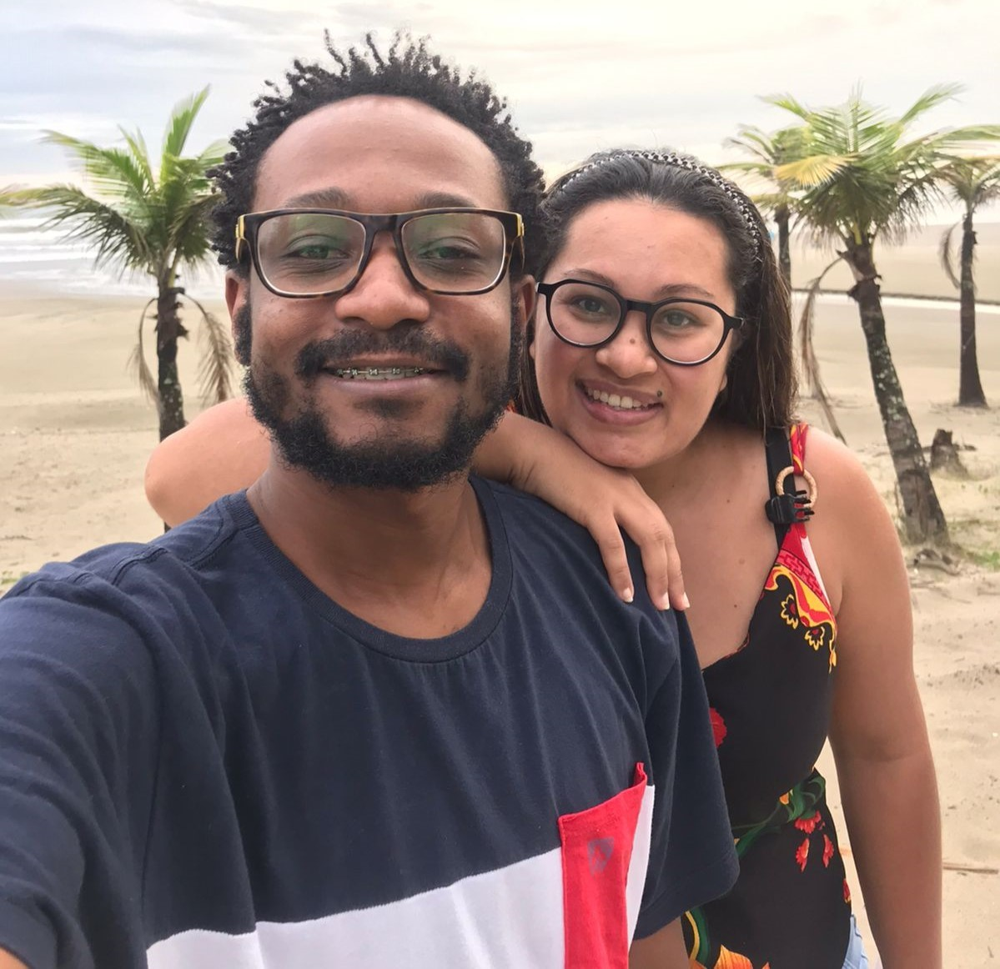

Júnior
Software engineer / Fullstack /
Olá,
Meu nome é Júnior Roberto dos Santos.
Nascido no dia 12 de novembro de 1988 tenho 34 anos,
sou casado com a mulher que me apaixonei em 2010 o nome dela é Viviane, não temos filhos.
Temos um Pet, o nome dele é Jordan.
Sou natural e residente de São Paulo.

Sou curioso e isso me trás o previlégio de aprender novas a manusear novas ferramentas em sempre conhecer novas tecnologias, e que sempre busco ler novos livros sobre diversos assuntos incluindo artigos sobre tecnologia: (fontes de tecnologia).
Para expandir meu aprendizado tive a oportunidade de e aprender de forma online com cursos gratuitos na plataforma do Senai que são:
Industria 5.0;
Excel;
Lei geral de proteção de dados;
Desvendando à Blockchain;
Na fundação bradesco foi realizado o curso de excel intermediádio.
Na fundação FGV foi realizado um curso extracurricular de
Introdução à ciência de dados.
Atualmente sou aluno na Universidade Anhembi Morumbi cursando o 2º ano de Ciências da computação.
Para aprender novas ferramentas de tecnologia utilizei da "rocketseat" para aprender sobre Back-end, Front-end, Fullstack utilizando Figma, HTML, CSS, Javascript, Python, PHP e colaborando nos projetos: